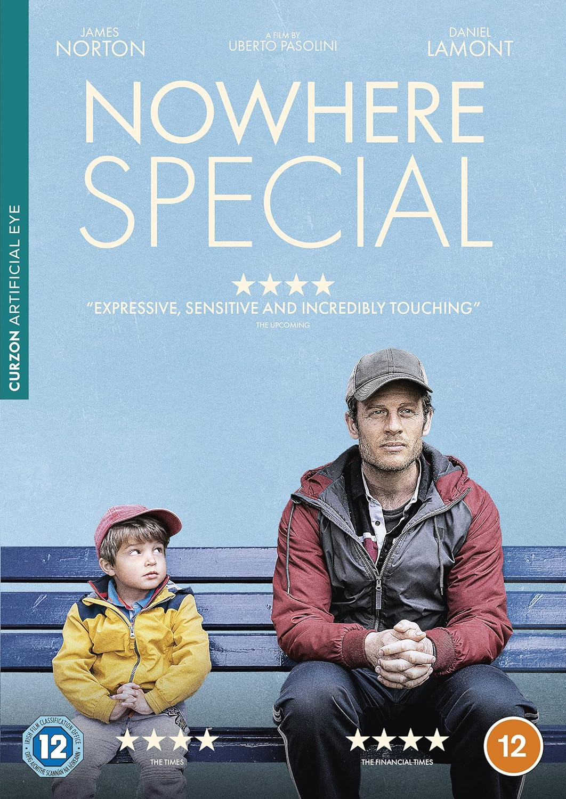
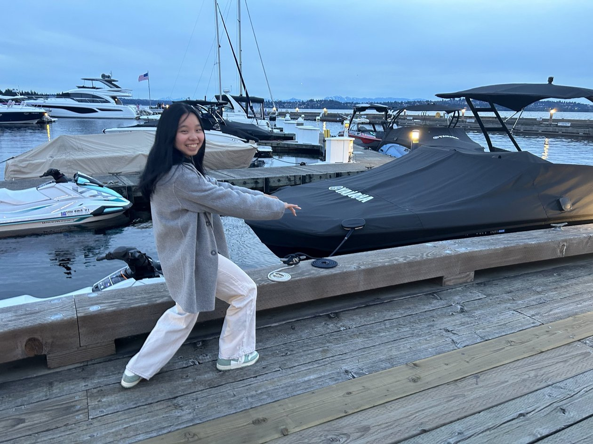
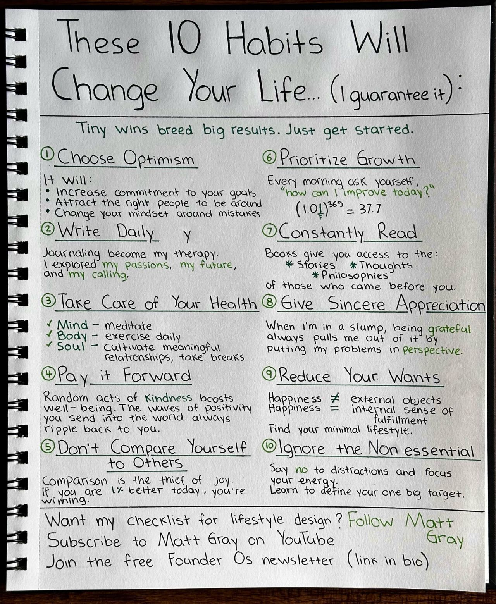
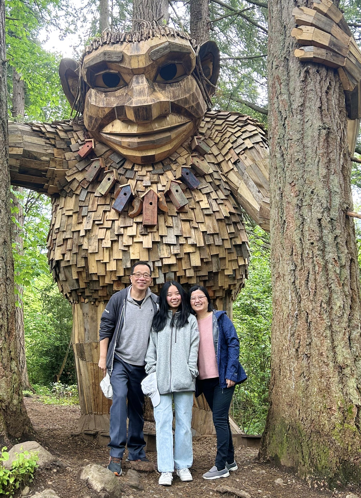

Table of Contents
1. 06/01/2024
The family watched a film titled "Nowhere Special" in our living room. The movie, whilst heart-wrenching, depicts the tale of a single father who, diagnosed with cancer, is compelled to put his son up for adoption. Despite interviewing multiple prospective families, he selects a single mother who lost her own baby at a young age and can no longer conceive. While I didn't verify, it seemingly presents as a low-budget production. Nonetheless, the tangible struggle, profound love, and palpable helplessness conveyed in the movie resonated as remarkably authentic.
Additionally, Ruru is departing for NYC the next day. It will be some time before we can indulge in a movie night. There's a touch of melancholy associated with this, but perhaps the movie brought some relief. After all, it serves as a reminder that there are, indeed, greater sorrows in life.

2. 05/31/2024
I attended a Zoom meeting with Carlo's students to commemorate his 80th birthday—a full decade after we celebrated his 70th birthday at UCLA.
Despite repeated comments noting little change in him, it's clear to me that he has indeed aged. I perceived a potential desire in him to address these comments, perhaps to mention his health concerns, but he chose not to. Aging is a very sad aspect of life, and I cannot help but imagine the much worse situation of myself in 30 years, should I still be here.
The thought of visiting him in LA has crossed my mind, however, my desire to do so is not particularly strong. Fundamentally, I'm not very close to him, but it might be my issue. I am not close to anybody.

The day was unexpectedly sunny following persistent gloomy weather. I had reserved a table for three at Le Grand Bistro American for 7:30pm, anticipating a sunset view. However, we were seated indoors by the waiter. None of us complained because of the lingering outdoor chilliness. The food was satisfactory but not impressive. After dinner, we took a brief stroll by the water, during which, Ruru amusingly pretended to play piano on a covered Yamaha-branded boat.

3. 05/30/2024
3.1. Discussion w/ Sierra (https://sierra.ai/)
- Clay Bavor (co-founder)
- elevate your customer experience w/ a trusted conversational ai platform
- fundamentally transform business
- customer service
- very complex reasoning
- sonar reasoning?
- hired princeton professor who worked on REACT paper
- 70% customer increase, CSAT increase
- devised a programming language to compose skills dial determinism to 10??
- headless API?
- AI agents represent a new type of software
- Step 1: RAG - "how can i add an item to an existing order?" (no training/fine-tuning models), low ceiling
- more complex knowledge base -> multiple articles, Sonas??? working memory
- Step 2: "I am missing something from my last order" -> i did not get the blueberries
- business logic??
you mentioned a programming language to compose skills … how to compose? natural language? how much customization
4. 05/26/2024
4.1. Oracle
I had a chat with Jun Qian of Oracle for 2.5 hours at a Panera place in Factoria. Dan Roth has joined, which complicates things, and they have a few other candidates. Overall, not clear if it's a good choice, but just like many other choices, it's hard to tell.
4.2. Trip & Clarice
I'm still bothered with the American Airline ticket situation - we have over $13,000 credit with AA but seems can only be used to book AA tickets to UK. I'm also not sure if Clarice made the right choice about her internship, i.e., whether she should've stayed with UIUC to learn the hardcore of ML instead of going to Celonois where she probably won't learn much in the summer. Yongjian said I'm overthinking, which could be true.
4.3. Oppenheimer
The family watched "Oppenheimer" in the living room - an impressive film. It provoked several thoughts. Firstly, it displayed how people worked on significant projects, although they were used for destructive purposes. This leads to a question: what are the most meaningful projects to work on today? Could it be AI in science? What could be my contribution in this field? Secondly, it showed that technology is never primary; the driving force is always business, politics, or products.
4.4. ACM Fellow App
I wrote a 750 word draft. Still waiting for David Lomet and Phil Bernstein's endorsements.
4.5. VAE
I have been continually pondering this simple formula
\[ P(X) = \int P(X|z; \theta) P(z) dz\]
in the setting of variational autoencoder (VAE).
Here we have
\(P(X|z;\theta) = \mathcal{N}(X|f(z, \theta), \delta^2 * I)\)
5. 05/25/2024
I've decided to begin keeping a diary, the purpose of which, I believe, is to remain candid with myself. This notion partly came from a post I saw on LinkedIn or Twitter. It seems worth reflecting upon daily.

Today, I accomplished several tasks:
a) I requested endorsements from four individuals for my ACM Fellow application, an issue I've too long delayed. As of now, I've received responses from Jiawei and Beng Chin.
b) Had a conversation with Alon about my decision regarding HKUST and my ACM Fellow application. He is truly kind-hearted, and I need to consider an appropriate way to express my gratitude.
c) I started on my ACM application and began documenting my contributions, but progress has been slow due to my lack of focus.
Additionally, I spent the morning with my family visiting the Issaquah Farmer's Market and Costco. We also stopped by to see the local attraction known as "Jakob Two Trees, Issaquah's Troll." Clarice had already been there on her longboard, so she was our guide. We took a few pictures - it was a trip worth making.
We also had a conversation about Clarice's reading habits. Her literary skills don't match mine, which is somewhat disheartening.
Unfortunately, I'm still dealing with a lingering cough and a runny nose, hindering my full recovery.
